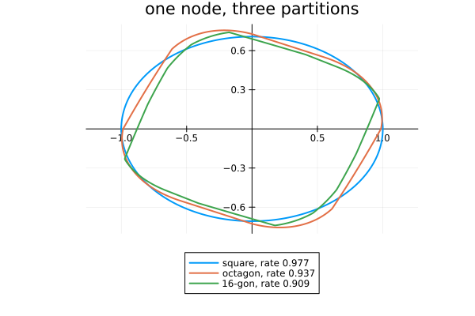

Piecewise semi-ellipsoids: a template from SetProg
SetProg writes optimisation problems over sets: ellipsoids, sublevel sets of polynomials, polytopes, and sets that are one of these on each cone of a partition. SetProgTemplate makes such a set the node function of a node, the function whose unit sublevel set it is, and the stability inequality $V_d(A_i x) \le \gamma^d V_s(x)$ becomes the inclusion $(A_i / \gamma)\, S_s \subseteq S_d$, which SetProg imposes. Three of its sets are templates this package already has, and the example checks that; the fourth, the piecewise semi-ellipsoid, is new.
import PathCompleteCertificates as PCC
import Clarabel, HiGHS, JuMP
using SetProg
using DynamicPolynomials
using LinearAlgebra
using Plots
const OPTIMIZER = Clarabel.OptimizerClarabel.MOIwrapper.OptimizerThe rotation and shear of the other examples, on the one-node graph, so that the template alone decides the rate.
A = [0.69 * [0.0 1.0; -1.0 0.0], 0.69 * [1.0 1.0; 0.0 1.0]]
problem = PCC.StabilityProblem(PCC.switched_system(A))
graph = PCC.common_graph(problem.system)
bound(template) =
PCC.jsr_bound(template, graph, problem; optimizer = OPTIMIZER, rtol = 1e-3)bound (generic function with 1 method)A partition is a polytope with the origin inside: its pieces are the cones over its facets. The polytope is built with Polyhedra on a linear programming solver, which SetProg works on the pieces with; a simplex solver such as HiGHS keeps that cheap.
LIBRARY = Polyhedra.DefaultLibrary{Float64}(
JuMP.optimizer_with_attributes(HiGHS.Optimizer, JuMP.MOI.Silent() => true),
)
polygon(normals) = polyhedron(hrep([HalfSpace(a, norm(a)) for a in normals]), LIBRARY)
octagon = polygon([[2, 1], [1, 2], [-1, 2], [-2, 1], [-2, -1], [-1, -2], [1, -2], [2, -1]])Polyhedron Polyhedra.DefaultPolyhedron{Float64, Polyhedra.Intersection{Float64, Vector{Float64}, Int64}, Polyhedra.Hull{Float64, Vector{Float64}, Int64}}:
8-element iterator of Polyhedra.HalfSpace{Float64, Vector{Float64}}:
HalfSpace([2.0, 1.0], 2.23606797749979)
HalfSpace([1.0, 2.0], 2.23606797749979)
HalfSpace([-1.0, 2.0], 2.23606797749979)
HalfSpace([-2.0, 1.0], 2.23606797749979)
HalfSpace([-2.0, -1.0], 2.23606797749979)
HalfSpace([-1.0, -2.0], 2.23606797749979)
HalfSpace([1.0, -2.0], 2.23606797749979)
HalfSpace([2.0, -1.0], 2.23606797749979)Three sets that are templates already
An ellipsoid is a quadratic form, the sublevel set of a polynomial is a sum of squares, and a polytope that is linear on each cone of a partition is the free-facet polyhedral template on the same cones; the cones over the facets of this octagon are those of planar_conic_partition(1). Each pair certifies the same rate.
@polyvar x[1:2]
pairs = [
(
"quadratic",
PCC.QuadraticTemplate(),
PCC.SetProgTemplate(Ellipsoid(; symmetric = true)),
),
(
"sum of squares, degree 4",
PCC.SumOfSquaresTemplate(2, x),
PCC.SetProgTemplate(PolySet(; symmetric = true, degree = 4, variables = x)),
),
(
"free facets, 4 cones",
PCC.ConicPolyhedralTemplate([PCC.planar_conic_partition(1)]),
PCC.SetProgTemplate(Polytope(; symmetric = true, piecewise = octagon)),
),
]
[
(name, round(bound(ours).rate; digits = 4), round(bound(theirs).rate; digits = 4)) for
(name, ours, theirs) in pairs
]3-element Vector{Tuple{String, Float64, Float64}}:
("quadratic", 0.9766, 0.9766)
("sum of squares, degree 4", 0.9126, 0.9126)
("free facets, 4 cones", 1.0117, 1.0117)The piecewise semi-ellipsoid
Ellipsoid(symmetric = true, piecewise = P) is a function quadratic on each cone of P and continuous across them, a template none of the others gives. Refining the partition can only help, since a function on the coarser one is a function on the finer one too.
square = polygon([[1, 0], [0, 1], [-1, 0], [0, -1]])
sixteen = polygon([
[1, 0],
[2, 1],
[1, 1],
[1, 2],
[0, 1],
[-1, 2],
[-1, 1],
[-2, 1],
[-1, 0],
[-2, -1],
[-1, -1],
[-1, -2],
[0, -1],
[1, -2],
[1, -1],
[2, -1],
])
partitions = [("square", square), ("octagon", octagon), ("16-gon", sixteen)]
piecewise = [
(name, bound(PCC.SetProgTemplate(Ellipsoid(; symmetric = true, piecewise = P)))) for
(name, P) in partitions
]
[
(name, nhalfspaces(P), round(certificate.rate; digits = 4)) for
((name, P), (_, certificate)) in zip(partitions, piecewise)
]3-element Vector{Tuple{String, Int64, Float64}}:
("square", 4, 0.9766)
("octagon", 8, 0.9365)
("16-gon", 16, 0.9087)On the four cones of the square the piecewise function certifies the rate of the plain ellipsoid; the octagon's eight cones improve on it, and sixteen cones of degree two beat the polynomial of degree four above.
Drawing it
The sublevel set $\{x : V(x) \le 1\}$ of each function, normalised as in Templates and graphs: the two axes. The piecewise one is a union of arcs of ellipses, meeting along the rays of the partition.
function sublevel_boundary(certificate; samples = 721)
degree = PCC.homogeneity_degree(PCC.template(certificate))
angles = range(0, 2pi; length = samples)
radii = [certificate([cos(a), sin(a)])^(-1 / degree) for a in angles]
radii ./= maximum(radii)
return radii .* cos.(angles), radii .* sin.(angles)
end
figure = plot(;
title = "one node, three partitions",
aspect_ratio = :equal,
legend = :outerbottom,
framestyle = :origin,
)
for (name, certificate) in piecewise
xs, ys = sublevel_boundary(certificate)
plot!(
figure,
xs,
ys;
label = "$name, rate $(round(certificate.rate; digits = 3))",
lw = 2,
)
end
figure
This page was generated using Literate.jl.